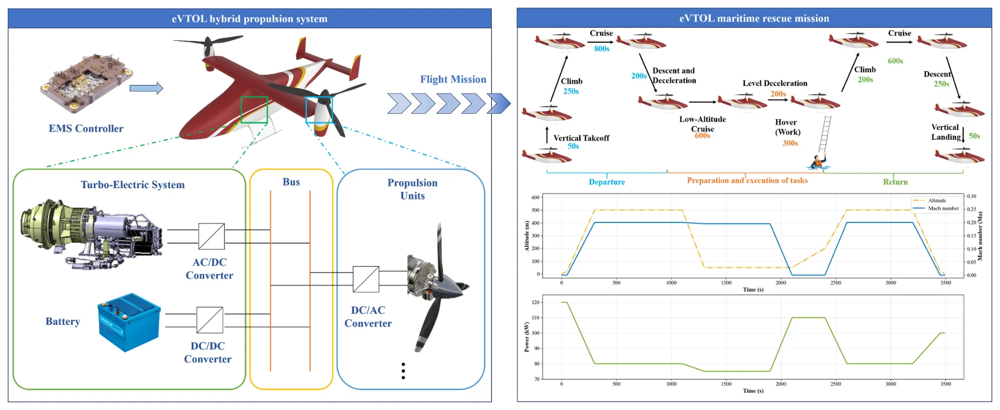
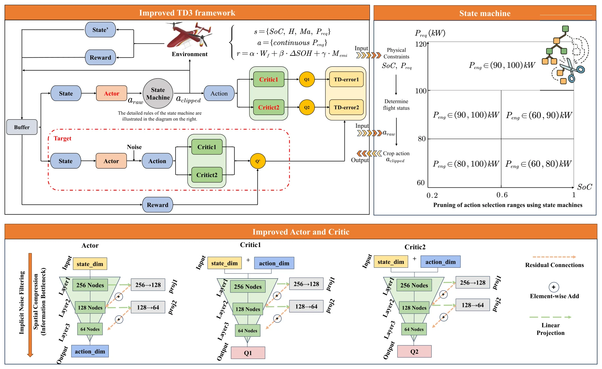

EMS-2 · Article · 2026
Eco-friendly energy management strategy for turbo-electric eVTOLs: Coupling fuel economy, battery health and life-cycle emissions via improved TD3
涡轮电 eVTOL 的环保型能量管理：以改进 TD3 耦合燃油经济性、电池健康与全生命周期排放（中文意译）
*, ** Corresponding authors.
Applied Energy 412 (2026) 127724
Received 17 December 2025 · Revised 2 March 2026 · Accepted 13 March 2026
DOI: 10.1016/j.apenergy.2026.127724
Keywords Energy management strategy; Deep reinforcement learning; Turbo-electric hybrid systems; Multi-objective optimization
Abstract
摘要
To achieve sustainable and green aerospace propulsion, energy management strategies (EMS) must evolve beyond simple fuel efficiency to address the synergistic optimization of battery health and life-cycle emissions. This paper proposes an eco-friendly multi-objective EMS for turbo-electric hybrid eVTOLs. A unified optimization framework is established to couple conflicting objectives—fuel economy, battery State-of-Health (SOH), and environmental impact. To solve this complex continuous control problem, an improved Twin Delayed Deep Deterministic Policy Gradient (TD3) algorithm is developed, incorporating a pyramidal feature extraction structure and state-machine-guided priors to filter noise and accelerate convergence. Simulation results demonstrate that the proposed strategy improves energy economy by 4% over rule-based methods and approaches the global optimum (Dynamic Programming) within a 0.91% margin. Furthermore, Hardware-in-the-Loop (HIL) validation confirms real-time feasibility on embedded avionics with an inference latency under 5.5 ms, proving its potential for deployment in sustainable urban air mobility.
Highlights
- Eco-friendly EMS couples fuel economy, battery SOH, and life-cycle emissions.
- Improved TD3 integrates pyramidal networks and priors to stabilize continuous control.
- Gradient balancing mechanism ensures robust weighting of conflicting objectives.
- Hardware-in-the-Loop tests confirm real-time feasibility with < 5.5 ms latency.
- Proposed strategy achieves near-optimal performance within 0.91% of Dynamic Programming.
Overview
简要介绍
绿色航空推进要求能量管理不只盯着燃油，还要同时照顾电池健康和全生命周期排放。论文面向 500 kg 级涡轮电混动 eVTOL，在统一的深度强化学习闭环中耦合燃油经济性、电池 SOH（半经验老化模型）和生命周期排放（基于 ReCiPe 2016），并通过权重/梯度平衡，避免短期燃油信号压过长期的电池保护激励。
算法上提出改进 TD3（TD3-IPRES-SM）：Actor 与 Critic 采用金字塔形（锥形）特征提取网络，并加入残差–投影结构，用于滤除高频噪声、稳定梯度；同时把状态机先验嵌入动作裁剪，剪除物理上不可行的动作区间，把探索限制在可行边界之内。
论文与 DP、状态机规则策略以及 TD3、DDPG、PPO、SAC、DQN 等主流方法进行比较，开展消融、权重敏感性和鲁棒性分析；并把训练好的策略部署到嵌入式 Linux 控制器上，与 Speedgoat 实时仿真机组成硬件在环（HIL）系统，对比数字仿真与 HIL 的轨迹。
Figures
混动构型与模型图
本页只展示混动构型图和模型框图，不展示实验结果图表；完整内容见正式出版论文（DOI: 10.1016/j.apenergy.2026.127724）。图片截取自已发表论文，图题保留原文英文，下附简短中文说明，点击可查看原图。
混动构型

Fig. 1. eVTOL hybrid system and flight envelope.
涡轮电混动 eVTOL 推进系统组成与海上救援任务飞行包线。
Reproduced from F. Yu, J. Chen, S. Li, T. Jiang, T. Zhang, X. Sun, J. Wang, Applied Energy 412 (2026) 127724. https://doi.org/10.1016/j.apenergy.2026.127724. © 2026 Elsevier Ltd. All rights reserved. Shown on the first author’s academic homepage.
系统与方法模型

Fig. 5. Flowchart of algorithm improvement.
改进 TD3 框架：状态机动作裁剪，以及带残差连接的锥形 Actor/Critic 网络。
Reproduced from F. Yu, J. Chen, S. Li, T. Jiang, T. Zhang, X. Sun, J. Wang, Applied Energy 412 (2026) 127724. https://doi.org/10.1016/j.apenergy.2026.127724. © 2026 Elsevier Ltd. All rights reserved. Shown on the first author’s academic homepage.
Reported Results
论文中报告的主要结果
- 摘要报告：相对规则策略，能量经济性提高 4%，与全局最优（DP）的差距在 0.91% 以内；结论部分另报告综合奖励提高 2.1%。
- 燃油消耗 Wf：TD3-IPRES-SM 50.058 kg，DP 49.598 kg，DP-SM 49.696 kg，规则策略 SM 52.152 kg（原文表 3）。
- HIL 与数字仿真结果高度一致：Wf 分别为 50.055 kg 和 50.058 kg，综合奖励分别为 −496.584 和 −496.395（原文表 6）。
- 论文报告的 HIL 测试中，单个控制周期的决策耗时低于 5.5 ms（原文图 16 标注：N = 349，均值 4.111 ms，中位数 3.705 ms）。
以上 HIL 数据均为论文发表时报告的历史实验结果，本页只做展示，不连接任何实时硬件。
Citation & Rights
引用与版权
F. Yu, J. Chen, S. Li, T. Jiang, T. Zhang, X. Sun, J. Wang, Applied Energy 412 (2026) 127724. Eco-friendly energy management strategy for turbo-electric eVTOLs: Coupling fuel economy, battery health and life-cycle emissions via improved TD3. https://doi.org/10.1016/j.apenergy.2026.127724
本文由 Elsevier 出版，版权归出版社所有。本页图片在作者个人学术主页上展示并注明出处，不提供全文；全文请通过 DOI 访问正式出版版本。本页数字均来自原论文，是对已发表结果的展示，不是新的实验或比较。
本页仅展示混动构型图和模型框图（图 1, 5），不收录实验结果图表；实验结果、表格及完整内容请见 正式出版论文。